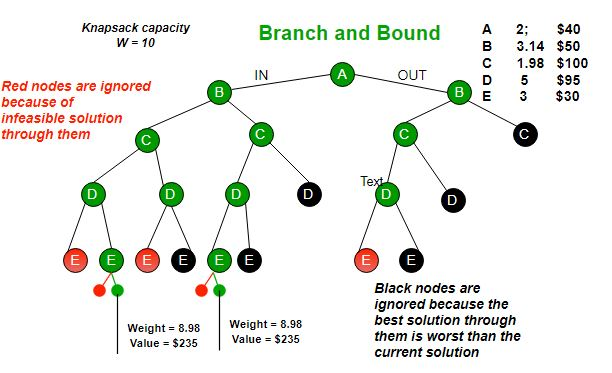

Branch and Bound technique
Branch and bound is an algorithm design paradigm which is generally used for solving combinatorial optimization problems. These problems are typically exponential in terms of time complexity and may requi re exploring all possible permutations in worst case. The Branch and Bound Algorithm technique solves these problems relatively quickly.
Let us consider the 0/1 Knapsack problem to understand Branch and Bound.
There are many algorithms by which the knapsack problem can be solved:
- Greedy Algorithm for Fractional Knapsack
- DP solution for 0/1 Knapsack
- Backtracking Solution for 0/1 Knapsack.
Let’s see the Branch and Bound Approach to solve the 0/1 Knapsack problem: The Backtracking Solution can be optimized if we know a bound on best possible solution subtree rooted with every node. If the best in subtree is worse than current best, we can simply ignore this node and its subtrees. So we compute bound (best solution) for every node and compare the bound with current best solution before exploring the node.
Example bounds used in below diagram are, A down can give $315, B down can $275, C down can $225, D down can $125 and E down can $30.
